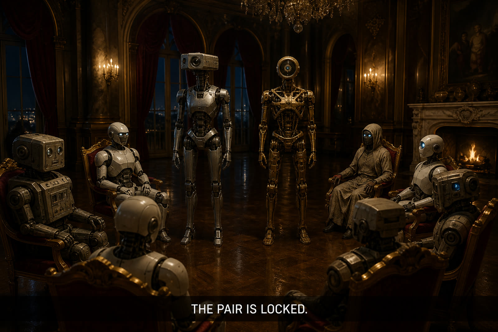

NOW · CHORUS-LINEChorus-line stand
Why it fails
Two chairs use the accuser stand, 0.40s apart, then the mansion. The talk camera is still walking the outside of the ring, so the pair is two extra heads in a group photo. Chrome says the fact and refuses the jobs. Same clip, same energy, no read of who does what. The room has two names to watch and is shown eight bodies instead.
- Stagger too short to parse as two people.
- Same clip as the accuser — the pick borrows the indictment’s body language.
- No job read on the TV. Phones already say walks / talks; the television does not.